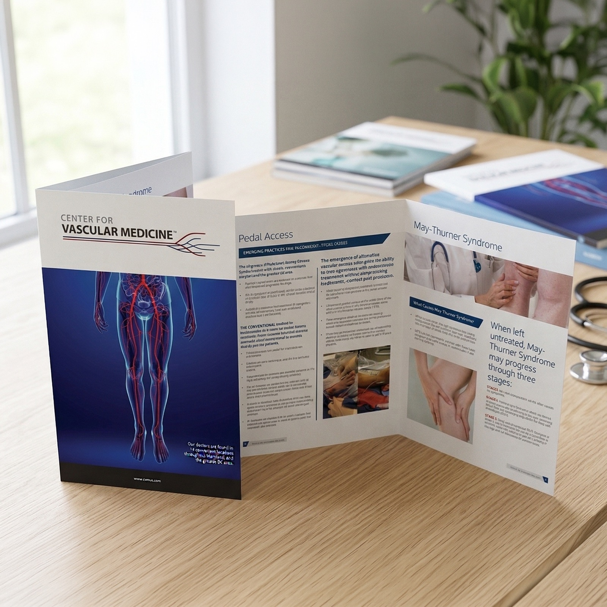
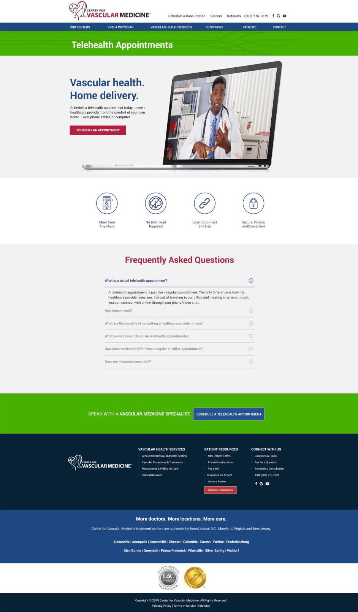
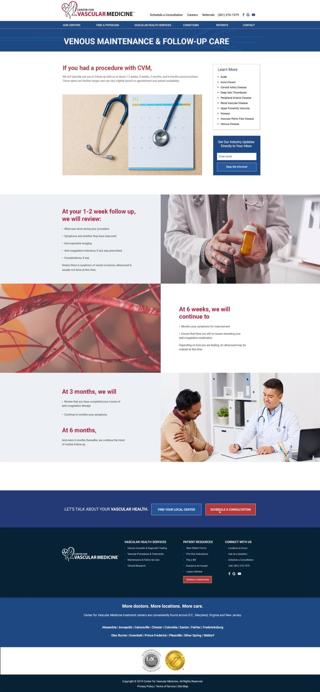

PrintBrochure & business cards



Project: Custom website design in WordPress CMS, a brochure and business cards.

Hover to scroll the page
Hover to scroll the page
A luxury real estate homepage for Northern Virginia's top-producing team.
View projectWhether you need a brand or a website that moves, our senior team handles it start to finish — all under one roof.
Get started today